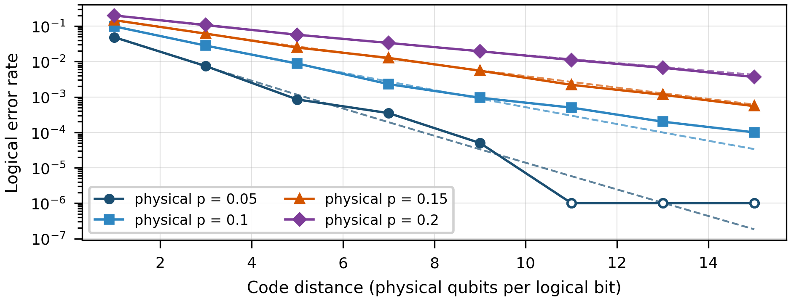
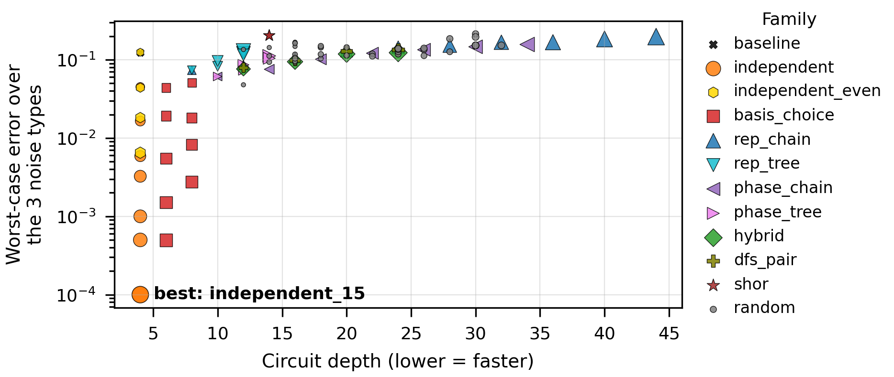
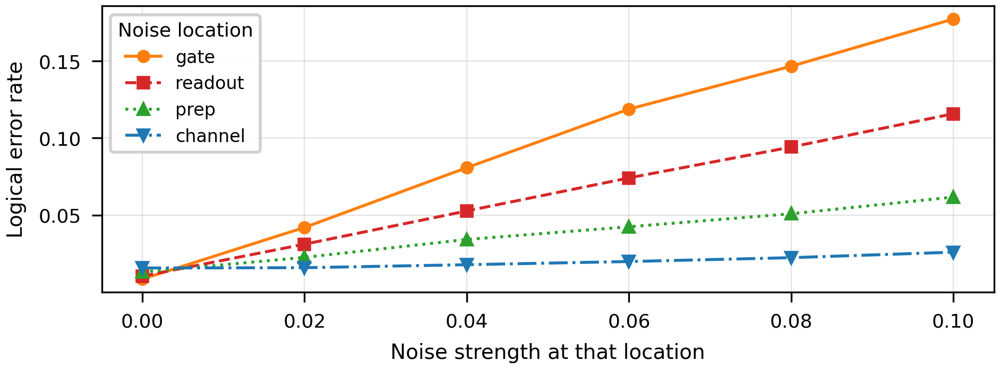
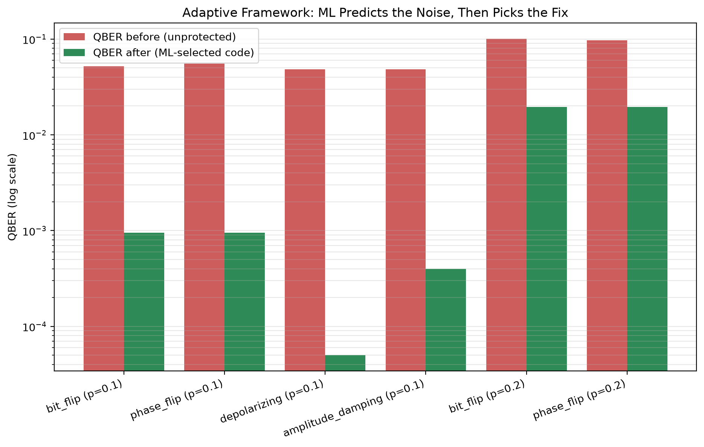

CCSC Northwestern Regional Conference 2026 · Journal of Computing Sciences in Colleges
Adaptive Machine Learning-Based Noise Mitigation for BB84 Quantum Key Distribution Over Noisy Quantum Channels
Hal and Inge Marcus School of Engineering, Saint Martin's University, Lacey, WA
Abstract
Quantum Key Distribution (QKD) is theoretically secure, but noise can raise the Quantum Bit Error Rate (QBER) and reduce key-generation efficiency. We present an adaptive machine-learning framework for BB84 under simulated bit-flip, phase-flip, and depolarizing noise. Observable channel statistics classify the dominant noise condition and select a mitigation circuit from 100 evaluated designs. Across six test environments, adaptive selection reduced error by at least 99.6% relative to a bare qubit and was never worse than the evaluated fixed strategy. Independent retransmission outperformed several deeper entangled codes in the simulated noise regime, while gate, readout, and preparation noise had greater impact than channel noise. The results motivate noise-aware adaptive mitigation and validation on physical hardware.
How it works
Standard BB84 only notices noise after the fact, by sacrificing part of the sifted key to estimate QBER. This framework reacts to the channel instead:
- Simulate. BB84 runs in Qiskit Aer under bit-flip, phase-flip and depolarizing noise at a range of strengths, with an optional intercept-resend eavesdropper.
- Classify. A Random Forest reads session statistics (overall and basis-specific QBER, sifted-key rate, directional bias) and names the dominant noise condition.
- Select. The prediction picks a mitigation circuit from a search over 100 designs, scored by worst-case error and circuit depth.
- Mitigate and measure. The chosen circuit protects the transmission, and the framework compares error before and after.
Results
| Finding | Result |
|---|---|
| Adaptive selection, six test environments (three noise types at strengths 0.08 and 0.14) | ≥ 99.6% less error than a bare qubit |
| Channel prediction in those six environments | 6 of 6 correct |
| Adaptive selection against the evaluated fixed strategy | never worse |
| Noise classifier, 1,000 sessions, five-fold cross-validation | 0.83 ± 0.02 accuracy |
| Noise classifier, held-out 25% split | 0.82 accuracy |
| Mitigation circuits searched | 100 |
Two results ran against intuition. Independent retransmission beat several deeper entangled codes in this noise regime, and noise at the gates, readout and state preparation hurt more than noise in the channel itself. All results hold under the tested simulated environments; physical hardware is future work.




Code
BB84_Adaptive_QKD.py: BB84 simulation, dataset, classifier and the classify, select, mitigate loopnoise_resistance.py: repetition-code hardening and the ML-selected mitigation studythree_noise_hardening.py: the 100-circuit search across bit-flip, phase-flip and depolarizing noiseadvanced_circuits.py: a separate search over unusual circuit structuresnotebooks/BB84_Adaptive_QKD.ipynb: every stage, end to end
Setup and run instructions are in the README.
Citation
@article{bahadori2026adaptive,
author = {Bahadori, Farzin and Ganu, Charles and Spahr, Stacie},
title = {Adaptive Machine Learning-Based Noise Mitigation for {BB84}
Quantum Key Distribution Over Noisy Quantum Channels},
journal = {Journal of Computing Sciences in Colleges},
note = {CCSC Northwestern Regional Conference, Whitman College,
Walla Walla, WA, October 2026},
year = {2026}
}